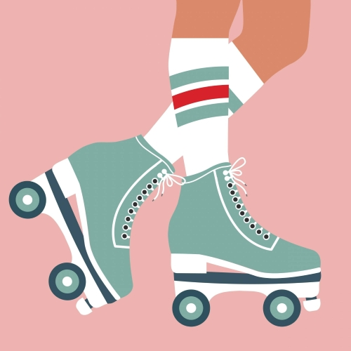

I offer individual and group roller-skating sessions designed to help skaters build skill,
confidence, and control at their own pace. Whether you are just starting out or looking to refine
technique, each session is focused on creating a supportive, encouraging learning environment.
Group classes are skill-focused and welcoming to all experience levels within the
listed category. Students are encouraged to repeat classes as often as needed to build confidence
before moving on to a new focus.
$25 per skater per 60-minute session
Group classes are held at a local indoor skating rink in Stafford. Students may
bring their own skates or rent from the rink for an additional fee.
Private sessions provide one-on-one instruction tailored to your specific goals.
These lessons are ideal for beginners who want personalized attention or experienced skaters working
on advanced techniques.
$50 per 60-minute session
Private lessons may be scheduled outside of listed group class times based on availability.
Group Class Schedule
| Classes | Sunday | Monday | Tuesday | Wednesday | Thursday | Friday | Saturday |
|---|---|---|---|---|---|---|---|
| Children's | Stops & Control 10-11 AM |
- | Balance & Basics 5-6 PM |
- | - | - | Turning & Transitions 10-11 AM |
| Adult Beginner | Beginner Foundations 12-1 PM |
Beginner Foundations 5-6 PM |
- | - | - | Control & Confidence 4:30-5:30 PM |
Backward Basics 12-1 PM |
| Jam/Dance | - | - | Groove & Transitions 6:30-7:30 PM |
- | - | Musicality & Timing 7-8 PM |
Combo Lab 4-5 PM |
| Rhythm & Footwork | - | - | - | Rhythm Patterns 6-7 PM |
- | - | Footwork Combos 2-3 PM |
| Freestle Flow | Creative Movement 2-3 PM |
- | - | - | Flow & Edges 6:30-7:30 PM |
- | - |